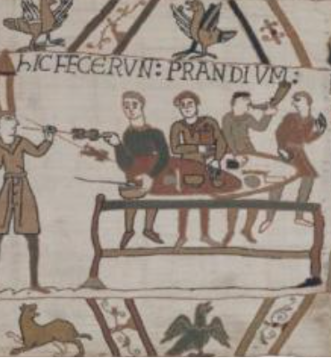
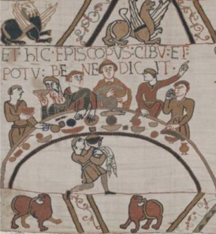

1 L'herbe d'or ou "sélage" est une herbe réputée magique qui ne peut être coupée par le fer, sans que le ciel se voile et qu'il arrive un grand malheur. Cf: Héloïse et Herboristerie bretonne . retour
2 L'empereur Charles surnommé le Chauve. retour
3 On se lavait les mains au son du cor avant le repas. retour
a. Drouk-kinnig (tribut): Ce mot, inusité aujourdhui, est formé de drouk, fâcheux, pernicieux, en breton et en gallois, et de kinnig, présent, offrande, dans les deux dialectes. (V. le Gonidec et Owen.) On le trouve traduit par "munus" dans les actes contemporains de Noménoé.
b. Pendevik (chef): Inusité aujourdhui, se retrouve dans le vocabulaire breton de 882, déjà cité, ainsi que le titre de tiern, partiellement incompris.
Trad. Ch. Souchon (c) 2003
Mais le bretonnant Fañch Eliès-Abéozen déclare comprendre plus facilement le breton du Barzhaz que celui, réputé impeccable, de Jean-Pierre Calloc'h (qui écrivait en vannetais, il est vrai).
Cliquer sur la case '+" ci-après pour afficher les remarques de Gourvil et Eliès.
|
(*)
In order to dispel magic from this beautiful poem which was admired by George Sand,
Francis Gourvil
, in his 1960 thesis, gives a word-for-word translation of it, meant to reflect what an "average Breton speaker" understands when reading the Breton text.
But the Breton speaker Fañch Eliès-Abéozen claims to understand Barzhaz Breton more easily than the reputedly impeccable Breton language of Jean-Pierre Calloc'h (who wrote in Vannes dialect, by the way). Click on the '+' box below to display the remarks of Gourvil and Eliès. (In French only) |
I.
1. Lherbe dor est fauchée ;
il a bruiné tout à coup.[1]
Bataille!
il a bruiné tout à coup.
2. Il bruine, disait le grand chef de famille
du sommet des montagnes dArez ;
Bataille!
3. Il bruine depuis 3 semaines, de plus en plus,
de plus en plus, du côté du pays des Franks,
4. Si bien que je ne puis en aucune façon
voir mon fils revenir vers moi.
5. Bon marchand, qui cours le pays,
sais-tu des nouvelles de mon fils Karo ?
6. Peut-être, vieux père dArez ;
mais comment est-il, et que fait-il ?
7. Cest un homme de sens et de cur ;cest
lui qui est allé conduire les chariots à Rennes,
8. Conduire à Rennes les chariots
traînés par des chevaux attelés trois par trois,
9. Lesquels portent sans fraude
le tribut de la Bretagne, divisé entre eux.
10. Si votre fils est le porteur du tribut,
cest en vain que vous lattendrez.
11. Quand on est allé peser largent,
il manquait trois livres sur cent ;
12. Et lintendant a dit : Ta tête,
vassal, fera le poids.
13. Et, tirant son épée,
il a coupé la tête de votre fils.
14. Puis il la prise par les cheveux,
et il la jetée dans la balance.
15. Le vieux chef de famille,
à ces mots, pensa sévanouir ;
16. Sur le rocher il tomba rudement,
en cachant son visage avec ses cheveux blancs ;
17. Et, la tête dans la main, il sécria en gémis-
sant: - Karo, mon fils, mon pauvre cher fils !-
II.
18. Le grand chef de famille chemine,
suivi de sa parenté ;
19. Le grand chef de famille approche,
il approche de la maison forte de Noménoë.
20. - Dites-moi, chef des portiers,
le maître est-il à la maison ?
21.- Quil y soit ou quil ny soit pas,
que Dieu le garde en bonne santé ! -
22. Comme il disait ces mots,
le seigneur rentra au logis ;
23. Revenant de la chasse,
précédé par ses grands chiens folâtres ;
24. Il tenait son arc à la main,
et portait un sanglier sur lépaule.
25. Et le sang frais, tout vivant, coulait
sur sa main blanche, de la gueule de lanimal.
26. - Bonjour à vous, honnêtes montagnards!
à vous dabord, grand chef de famille ;
27. Quy a-t-il de nouveau ?
que voulez-vous de moi ?
28. - Savoir de vous sil est une justice, sil est
un Dieu au ciel, et un chef [4] en Bretagne.
29. - Il est un Dieu au ciel, je le crois,
et un chef en Bretagne, si je puis. [3]
30. - Celui qui veut, celui-là peut ;
celui qui peut, chasse le Frank,
31. Chasse le Frank, défend son pays,
et le venge et le vengera !
32. Il vengera vivants et morts,
et moi, et Karo mon enfant.
33. Mon pauvre fils Karo décapité
par le Frank excommunié ;
34. Dans sa fleur: sa tête, blonde comme mil,
fut jetée dans la balance pour faire le poids ! -
35. Et le vieillard de pleurer, et ses larmes
coulèrent le long de sa barbe grise,
36. Et elles brillaient comme la rosée
sur un lis, au lever du soleil.
37. Quand le seigneur vit cela,
il fit un serment terrible et sanglant :
38. - Je le jure par la tête de ce sanglier,
et par la flèche qui la percé ;
39. Avant que je lave le sang de ma main droite,
jaurai lavé la plaie du pays !-
III.
40. Noménoë a fait
ce quaucun chef ne fit jamais :
41. Il est allé au bord de la mer avec des sacs
pour y ramasser des cailloux,
42. Des cailloux à offrir en tribut
à lintendant du roi chauve [2].
43. Noménoë a fait
ce quaucun chef [4] ne fit jamais :
44. Il a ferré dargent poli
son cheval, et il la ferré à rebours.
45. Noménoë a fait
ce que ne fera jamais plus aucun chef :
46. Il est allé payer le tribut, [3] en personne,
tout prince quil est.
47. - Ouvrez grandes les portes de Rennes,
que je fasse mon entrée dans la ville.
48. Cest Noménoë qui est ici
avec des chariots pleins dargent.
49. - Descendez, seigneur ; entrez au château ;
et laissez vos chariots dans la remise ;
50. Laissez votre cheval blanc entre les mains
des écuyers, et venez souper là-haut.
51.Venez souper, et, tout dabord, laver ;
voilà que lon corne leau ; entendez-vous ?
52. - Je laverai dans un moment, seigneur,
quand le tribut sera pesé. -
53. Le premier sac que lon porta
( et il était bien ficelé ),
54. Le premier sac quon apporta
on y trouva le poids.
55. Le second sac quon apporta,
on y trouva le poids de même.
56. Le troisième sac que lon pesa :
- Ohé ! ohé ! le poids ny est pas ! -
57. Lorsque lintendant vit cela,
il étendit la main sur le sac ;
58. Il saisit vivement les liens,
, sefforçant de les dénouer.
59. - Attends, attends, seigneur intendant,
je vais les couper avec mon épée. -
60. A peine il achevait ces mots,
que son épée sortait du fourreau.
61. Quelle frappait au ras des épaules
la tête du Frank courbé en deux,
62. Et quelle coupait chair et nerfs
et une des chaînes de là balance de plus.
63. La tête tomba dans le bassin,
et le poids y fut bien ainsi.
64. Mais voilà la ville en rumeur :
- Arrête, arrête lassassin !
65. Il fuit ! il fuit ! portez des torches ;
courons vite après lui !
66. - Portez des torches, vous ferez bien:
la nuit est noire et le chemin glacé ;
67. Mais je crains fort que vous nusiez
vos chaussures à me poursuivre,
68. Vos chaussures de cuir bleu doré ;
quant à vos balances, vous ne les userez plus ;
69. Vous nuserez plus vos balances dor
en pesant les pierres des Bretons.
- Bataille ! -
1. - Lherbe dor, ou le sélage, ne peut être, dit-on, atteint par le fer sans que le ciel se voile et quil arrive un grand malheur.
2.- Lempereur Charles surnommé le Chauve.
3.- On se lavait les mains, au son du cor, avant le repas. (ajouté en 1867)
Les notes suivantes disparaisssent dans l'édition 1867:
3. On se rappelle quil y a peu dannées [édition 1839], Morvan-le-soutien- des-Bretons disait, en frémissant de rage : « Il aura de moi ce quil me demande, cet empereur des Franks, je lui paierai le tribut en fer[4] ! »
- Si fortuna daret possim quo cernere regem...
Proque tributali hæc ferrea dona dedissem.
[Si le sort m'accorde de pouvoir voir ce roi
Ce tribut c'est en fer que je le payerai]
(Ermoldus Nigellus, ap. Scriptores rerum gall. et franc, t. VI, p. 46.) [Ermold le Noir (790- 838), Poème pour Louis le Pieux, cité d'après le "Recueil des Historiens des Gaules et de la France" de Dom Bousquet, 1738 ]
4. Jai déjà signalé les titres de tiern, et de pendevik ; jindiquerai encore les mots, da, bon ; maour (aujourdhui meur) grand ; bis, jamais ( qui se retrouve dans bis-koaz); la forme kleret-hui, entendez-vous ? de même que sellet-hu (maintenant contractée en setu, comme voyez ici, son équivalent français, lest en voici) ; la préposition nemet ma, mais ; laddition de larticle au nom propre {Ann Neumenoiou); enfin les verbes gwalchi, laver, et korna ann dour, corner leau, qui rappellent lusage antique des ablutions, faites au son du cor, avant les repas, sont pareillement à noter.
I.
1. L'herbe d'or est fauchée;
aussitôt cela s'est embrumé.
Huée ! (2).
aussitôt cela s'est embrumé.
2. Cela s'embrume, disait
le grand Ozac'h (3), du haut d' Aré;
Huée !
3. S'embrume, il y a trois semaines,
si sombre, des côtés de la France (4).
4. Tant que je ne puis voir en aucune façon
mon fils revenir sur ses pas.
5. Bon marchand à parcourir du pays,
entendis-tu (5) la trace de mon fils Karo ?
6. Peut-être, grand-père de l' Aré,
savoir comment est et quelle manière ?
7. Homme de conscience, homme de cur,
allé avec les charrettes à Rennes.
8. Allé à Rennes avec les charrettes,
des tireurs contre elles trois par trois.
9. La méchante offrande de Bretagne avec eux
sans défaut, et elle partagée entre chacun.
10. Si c'est votre fils l'offrant,
l'attendre vous ferez en vain.
11. Quand on alla. pour peser l'argent,
il en voulut (6) trois sur cent;
12. Si bien que le fermier dit :
Ta tête, homme, fera l'arfer (7).
13. Et prise (8) dans son épée il a fait,
et la tête de votre fils il a coupé.
14. Et dans ses cheveux il a pris,
et dans le plateau il l'a jetée.
15. Le vieil époux sitôt qu'il l'entendit,
était près de lui tant qu'il s'évanouit (9).
16. Sur le rocher il tomba franchement,
sa figure cachée dans ses cheveux blancs.
17. Sa tête en main (10), pleurant maour (11),
Karo, mon fils, mon pauvre fillot !
II
18. Le grand Ozac'h allant en route,
avec lui à sa suite ses parents;
19. Le grand Ozac'h allant à côté (12),
à côté de la capitale de N eumenoiou.
20. - Dites-moi, chef passeur (13),
si le seigneur est chez lui ?
21. - Ou il est, ou il n'y est pas,
que Dieu le tienne (14) en santé !
22. Son mot n'était pas tout-à-fait dit,
quand le seigneur était arrivé à la maison.
23. Arrivé à la maison de traîner (15),
ses grands chiens avant, folâtrant.
24. Dans sa main son arc avec lui,
et un sanglier sur son épaule.
25. Et tout frais le sang coulant sur sa main
blanche de son museau.
26. - Bien à vous ! bons montagnards;
et à vous grand Ozac'h en premier;
27. Qu'est-il survenu de nouveau !
Quoi avec vous de moi ? (16)
28. Nous sommes venus savoir s'il y a droit;
Dieu dans le ciel et tiern (17) en Bretagne.
29. - Dieu est au ciel, je crois
, et tiern en Bretagne, si je puis.
30. - Quiconque veut, celui-là peut;
quiconque peut envoie (18) le Français (19),
31. Envoie le Français, soutient son pays,
et pour lui se fâche et se fâchera!
32. Aussi bien pour vivant et mort,
pour moi et mon fils Karo.
33. Mon fillot Karo décapité
par le Français excommunié.
34. Déc. délicatement (20), tête blonde de mil,
pour finir d'aplanir le plateau (21).
35. Et lui de pleurer, tant qu'allèrent
ses larmes jusqu'à sa barbe grise,
36. Tant que cela brillait comme rosée
sur fleurs de lis quand éclate le jour.
37. Le seigneur, quand il l'a vu, jurer rouge
épouvantablement il a fait.
38. - Je le jure tête de ces arbres (22)
et la flèche qui Ie piqua (24),
39. Plutôt que je laverai le sang de ma main
droite, j'aurai lavé la plaie du pays.
III
40. Le Neumenoiou a fait
ce que ne fit bis aucun tiern :
41. Aller avec des sacs sur les grèves
pour ramasser des petits cailloux;
42. Des petits cailloux pour envoyer
à offrande au fermier du roi chauve.
43. Le N eumenoiou a fait
ce que ne fit bis aucun tiern :
44. Ferrer son cheval avec de l'argent fin
, mais le ferrer envers contre envers (25).
45. Le N eumenoiou a fait
ce que ne fera jamais aucun tiern:
46. Aller payer l'offrande,
bien qu'il soit pendevik (26).
47. Ouvrez toutes grandes les portes de Rennes,
que j'entre dans la ville tout droit.
48. Le Neumenoiou est ici, des charrettes
pleines d'argent avec lui.
49. Descendez, seigneur, venez dans la maison,
et laissez vos charrettes dans la remise.
50. Et laissez votre cheval blanc aux pages,
et venez souper en haut.
51. Venez souper, avant laver;
on corne l'eau (27), entendez-vous ?
52. Je laverai, seigneur, tout-à-l'heure,
quand sera pesée l'offrande.
53. Le premier sac qui fut apporté,
(et il était bien ficelé),
54. Le premier sac qui fut apporté,
le poids y fut trouvé.
55. Second sac (28) qui fut apporté,
uni aussi (29) il fut trouvé,
56. Troisième sac qui fut pesé :
Ho la ! ho la ! il veut ! (30)
57. Le fermier, comme il le vit,
sa main sur le sac allongea;
58. Dans les liens il prit franchement,
cherchant le moyen de les détacher (31).
59. Attends, attends, seigneur fermier,
mon épée les coupera bientôt.
60. Sa parole n'était pas achevée
que son épée était diwennet (32).
61. Et à la tête du Français plié en deux,
au ras des épaules, frapper il a fait.
62. Tant qu'il coupa chair et elfeien (33)
et la corde d'un plateau encore plus.
63. Et tombée dans le plateau la tête,
et lui bien uni comme ceci.
64. Mais voyez-vous, bruit dans la ville :
- Arrête, arrête le tueur !
65. Le voilà parti ! Envoyez de la lumière;
venons vite à la suite de ses traces !
66. Envoyez de la lumière, vous ferez bien,
noire la nuit et le chemin glacé;
67. Excepté que vous n'usiez vos sabots,
j'en ai peur, à venir sur mes traces,
68. Vos souliers bleu-doré (34),
vos plateaux vous n'userez pas;
69. Vos plateaux d'or aucune fois,
en pesant les pierres des Bretons.
Huée!
I
1. G old herb (1) was mown by somebody.
For it has drizzled suddenly .
-Let's fight!-
For it has drizzled suddenly.
2. "It drizzles, it drizzles", has said
The chief, from the Mount of Arrée.
-Let'us fight!-
3. "For three weeks it has been misty,
Far towards the Frankish country,
4. So that by no means can I see,
If my dear son returns to me!
5. Merchant, who travels many lands,
Did you hear of Karo, my son?"
6. -Maybe, old father of Arrée,
But how looks he and what does he?
7. A man of sense, a man of heart
Who went to drive to Rennes the carts;
8. Who went to Rennes with the barrows
That horses bound three by three draw.
9. Well divided each cart carries
Brittany's tribute faithfully.
10. Is your son the tribute-bearer?
You may wait for him no longer!
11. When they came to weigh the silver
There lacked 3 pounds in each hundred;
12. And the steward has said: "Your head,
Vassal, shall then complete the weight."
13. And suddenly his sword he's drawn
And cut off the head of your son!
14. And he has grasped it by the hairs
And he has thrown it on the scales
15. The old chief when he heard that news
Staggered and he was like to swoon.
16. Harshly upon the rock he fell
Hiding his face with his white hair.
17. And his head in his hands, he moaned:
"Karo, my son, my poor dear son!"
18. The great tribal chief has set out
And by his kindred he's followed
19. The great tribal chief approaches
The house where Noménoé lives.
20. -Tell me, o head of the porters,
Is he at home now, the master?
21. -Be he there or be he not there,
God keep him always in good health!-
22. And he was still to him speaking
When the Lord came to his dwelling.
23. He was returning from the hunt
Preceded by great playful hounds
24. In his hand he held still his bow
On his shoulder carried a boar.
25. From the mouth of the beast fresh blood
Was flowing upon his white hand.
26. Hail to you, honest mountaineers!
First of all, to you, tribal chief:
27. What news are you bringing to me?
What do you want to know from me?
28. -If a law and a God there be;
Is there a chief in Brittany?
29. There is a God to my belief.
And if I can, there is a chief
30. In Brittany. -He who will, can!
And who can, drives away the Frank!
31. Drives him from his country away
Avenges it now and always,
32. Avenges who lives and who died,
And me and Karo, my dear child.
33. My poor son Karo, beheaded
By the excommunicated,
34. Beheaded in his prime, alas,
To balance the weight in the scales.
35. And the old man began to weep
And his tears flowed down his grey beard.
36. As the dew at the rising sun
On a lily flower they shone.
37. And the Lord when his tears he saw
Swore a terrible, bloody oath.
38. By this boar's head and the arrow
Which has pierced it, I do swear now:
39. I won't wash the blood from my hand
Before washing my country's wound!
40. And chief Noménoé has done
What no chief (b) did, but he alone:
41. He went with bags to the sea shore
And gathered pebbles more and more,
42. Pebbles as tribute to tender
To the bald e mperor's (2) steward.
43. And chief Noménoé has done
What no chief did, but he alone:
44. With polished silver has he shod
His horse, and with reversed shoes.
45. And chief Noménoé has done
What no chief did, but he alone:
46. For, Prince as he is, he has gone
To pay the tribute in person!
47. -Open wide the big gates of Rennes
That I make entry in the town,
48. With chariots full of silver
'tis Noménoé who is there.-
49. -Alight, my lord, and come ahead
And leave your chariots in the shed
50. Leave to the equerry your horse
And come and have supper above.
51. Come to soup, to wash, first of all
Hear you them sound the w ater-horn ? (3)
52. -I will wash presently, my laird
When the tribute shall have been weighed
53. The first bag they had to carry
(And it was tied right properly)
54. The first bag they had carried down
Was of the weight agreed upon.
55. The second bag which they had brought
Also of a right weight was found.
56. The third bag they weighed: -Aha! ha!
Aha! ha! This weight is not right!-
57. When the steward heard it, he had
Extended his hand to the bag.
58. And quickly he had seized the cord
And to untie it endeavoured...
59. Wait a moment, Master Steward
I will cut it off with my sword.
60. Hardly had he finished these words
That his sword leaped from the scabbard,
61. And it struck close to the shoulders
The head of the double bent steward,
62. And that it had cut flesh and nerves
And beside one chain of the scales.
63. In the scale had fallen the head
And thus now the balance was made.
64. But behold the town in uproar:
-Come on, and stop the murderer!
65. -He flees, he flees, quick, torches bring!
Let us run quickly after him!
66. -Bring torches! And you will do right:
Frozen is the road, black the night!
67. But I greatly fear you will wear
Your shoes if follow me you dare,
68. Your shoes of blue gilded leather!
But your scales you will use no more;
69. Your golden scales in weighing stones
Brought as tribute by the Bretons.
-Let's fight!-
NOTES to the FRENCH text in the 1845 release
1 The Herb of Gold or "selagium" is a magic herb that should never be cut with an iron blade which causes the sky to turn cloudy and a calamity to happen. Cf: Héloïse and Breton Herbal . back
2 The Emperor Charles, surnamed the Bald. back
3 Before the repast, at the sound of the horn, one washed one's hands. back
NOTES to the BRETON text (1845)
a. Drouk-kinnig (tribute) : This word, unusual today, is made up of drouk, annoying, pernicious, in Breton and Welsh, and kinnig, present, offering, in both dialects. (V. le Gonidec and Owen.) It is found translated by "munus" in the contemporary acts of Noménoé. back
b. Pendevik (chief) : Unusual today, is found in the Breton vocabulary of 882, already quoted, as well as the title of tiern, partially misunderstood. back
Transl. Ch.Souchon (c) 2003
 Remarques de Gourvil et d'Eliès-Abeozen
Remarques de Gourvil et d'Eliès-Abeozen
|
Analyses du « Tribut » par F. Gourvil et F. Eliès-Abeozen
Ces deux philologues bretonnants ont donné chacun leur propre analyse du texte breton de cette gwerz. Gourvil assortit la sienne d'une curieuse traduction (colonne 3 ci-dessus) mot à mot des vers bretons afin de faire accéder le lecteur ne connaissant pas l'idiome original « non à ce que l'auteur a voulu leur faire exprimer par l'intermédiaire d'une autre langue, mais à ce qu'il y a réellement exprimé. » Elies-Abeozen avait d'abord publié en 1959, dans « En ur lenn Barzhaz-Breizh » (En lisant le Barzhaz Breizh) la teneur de ses cours de philologie donnés en 1943 : des remarques relatives à la conformité des textes bretons du Barzhaz avec les règles en vigueur en matière de breton littéraire (imprimées en bleu ci-après). Dans une seconde édition de cet opuscule, il s'efforce d'allumer des contre-feux en répondant aux plus surprenantes des critiques assassines de Gourvil, en particulier en ce qui concerne le « Tribut » et la fameuse « traduction » qu'il traite de « furlrukinerez » (bouffonerie). (Cf. à ce sujet les 2 traductions du Remède de l'amoureux malade collecté par F.-M. Luzel en 1890). |
Each of these two Breton philologists gave their own analysis of the Breton text of this gwerz.
Gourvil appends to his a curious word-for-word translation of the Breton verses (above column 3) in order to give access to the reader unaware of the original idiom " instead of what the author wanted to express via another language , to what is actually expressed in said idiom ». Elies-Abeozen had first published in 1959, in "En ur lenn Barzhaz-Breizh" (Reading the Barzhaz Breizh) the content of philology courses given in 1943: remarks relating to the conformity of the Breton texts in the Barzhaz with the rules in force regarding literary Breton (printed in blue below). In a second edition of this booklet, he endeavours to defend La Villemarqué's work by answering the most surprising of Gourvil's murderous criticisms, in particular with regard to the "Tribute" and the famous "translation" which he calls a "furlrukinerez" ( mere buffoonery). (Cf. on this subject the 2 translations of Remedy for the sick lover collected by F.-M. Luzel in 1890). |
Conservé comme nom propre dans l'anthroponymie bretonne, et ayant librement évolué, Nomenoë serait donc devenu Névénè ou Névéno dans la bouche d'un paysan cornouaillais de 1840.
Taquiné à ce propos par d'Arbois de Jubainville, dans sa lettre à Jean Salaün : "Encore un mot sur le Barzaz-Breiz" , et, sans doute questionné par La Borderie, La Villemarqué prétendit que c'est en réalité sous les formes Navinéou ou Navinou qu'il aurait noté le nom du héros breton. Si c'était exact, on ne voit pas pourquoi ayant noté Navinéou ou Navinou , il aurait, de sa propre autorité, transformé ces noms en Neumenoiou . Les lois de la phonétique bretonne s'opposent d'ailleurs à de semblables évolutions du nom Nomenoé
« Je tiens ce chant de Joseph Floc'h , un paysan du village de Kerguérez dans les Montagnes Noires », nous dit La Villemarqué dans le BB 1845, p.185. Il reste à se demander si cette gwerz est demeurée telle qu'elle avait été chantée par le paysan des Montagnes Noires. Il est certain que le dialecte et le style ont été révisés .
D'où par exemple vient ce Neumeunoiou ? Le nom de notre grand roi apparaît dans le Cartulaire de Landévennec, le plus souvent sous la forme Nominoé, une autre fois Numinoé et même Nuvenoe . Selon les règles de l'évolution du breton, on a aujourd'hui Nevenoe . D'où vient donc ce Neumenoiou ? J'ai bien peur, même si cela prète à sourire, que l'origine ne soit la forme latine forgée par les moines de Saint-Florent, dont le roi de Bretagne avait incendié l'abbaye :
Quidam fuit hoc tempore / Nomenoius nomine :
Il y avait à cette époque un nommé Noménoé.
Enlevez le s final et nous y sommes. Voilà un nom tout trouvé pour la chanson.
Regardons maintenant les mots :
drouk-kinnig n'est connu que par ce poème ; truach est le mot que l'on trouve chez Ernault Geriadurig, p.662 sous les formes truag, truayg. Il viendrait du français truage.selon Ernault Dict. etymologique, p. 397. Dans l'édition de 1845, LV explique dans une note que c'est la combinaison de drouk et de kinnig sur le modèle d'autres mots comme droukkomz, droukkustum, droukober, droukhanv, drouksoñjer , etc.
A tout ce que j'ai écrit à ce sujet dans Preder, 7-8, p. 67, je m'empresse d'ajouter que l'on trouve effectivement le nom de notre grand roi dans Lesneven, Kerneven, Rosneven et qu'il a évolué en Neveno, Nevené, où la terminaison s'est maintenue, p. 381. C'est sous la forme Navineou ou Navinou que La Villemarqué a entendu le nom du héros de la gwerz.
Apparemment, bien que fondée sur un trait d'esprit, il n'y a pas de meilleure explication du mot Neumenoiou que le Nomenoious que l'on trouve dans la chanson des moines de Saint-Florent.
Mal venu sous tout rapport serait le mot drouk-kinnig , au dire de Francis Gourvil, p.381. Qu'il s'agisse ou non d'un monstre, cela n'a pas empêché Tangui Malmanche de s'en servir dans son Gurvan ar marc'hek estranjour (1923)
: « A l'extérieur on entend les hommes d'armes qui s'en vont en chantant : « Le roi Louis avait imaginé de réclamer des Bretons un tribut ( kinnig ) » ... « Français, Français ( Gallaoued ) votre peau me serve de chemise ! »... « Gens de Paris, gens de Paris, vos tripes me servent de ceinture !»
Ce charmant petit passage manque et c'est bien dommage, car j'en suis friand - à la liste des citations de Gourvil, page 523 et ss. qui vise à dénoncer l'influence néfaste du Barzhaz Breizh sur l'esprit de la Bretagne.
Cette plante est le sélage des anciens, selon Georges Dottin (1863 - 1928) dans Manuel pour servir à l'étude de l'Antiquité celtique, p. 339. Il ne fallait pas la couper avec une lame de fer, sinon le ciel s'obscurcissait aussitôt et il se produisait quelque catastrophe, selon une note de LV, p. 112. Ce nom est ancien en breton.Nous le trouvons dans le « Confessional dastumet... » 2ème édition, 1646, f° 24 : « Nep a glask en noz-se (noz Gouel Yann) an aour geotenn ha had raden... » (On récolte cette nuit-là nuit de la Saint-Jean l'herbe d'or et la graine de fougère...) C'est certainement cette plante dont les enfants se frottaient les yeux autour du brasier de la Saint-Jean. J'étais l'un d'entre eux.
L'herbe d'or ; je ne faisais qu'une hypothèse quand je parlais à son propos d'une plante du brasier de la Saint-Jean. Mais voici quelques lignes tirées d'un conte de Gabriel Milin, cf. « L'oiseau de la vérité... » (1950) : « Voici, mon enfant, l'herbe d'or récoltée au clair de lune, le sixième jour, et elle te rendra de grands services. Tu n'auras qu'à lui dire : - Petite herbe fais ton devoir ! - »
Argad ; « Moyen Br. Argat est bien un verbe synonyme de hual : « hucher » [huer, huée] en poursuivant les loups » selon le dictionnaire de Le Gonidec, p. 15.
[Le Gonidec le confond par ailleurs avec les mots arch et arch an boet (coffre, boîte), ou plus exactement avec archad de arch ("plein un coffre"), cf ; Rev. Celt . I, 399 (Dict.etym. D'Ernault 211) . Le mot argad n'existe plus dans le IIième dictionnaire de Le Gonidec (Note de l'éd.)]
[Autre remarque: un "huchet" est un petit cor de chasse utilisé lors de la huée]
Le composé Lozachmeur est à interpréter non comme : « le grand époux, le " grand mari ", mais comme "le grand Lozach ".
Ann ozac'h meur , à mon avis, est aussi facile à comprendre pour un bretonnant que le sont des noms tels que ; Per Ar Meur, Enez-meur, Kroaz-veur, iliz-veur (Pierre Le Grand, L'Île-Grande, Grand-Croix, cathédrale). Si un bretonnant « non prévenu », tel que l'entend Gourvil, ne comprend pas le mot ozac'h , je ne vois pas bien pourquoi il comprendrait mieux le mot meur , qui figure en bonne place depuis peu dans le breton de tous les jours à côté du mot bras (grand). Il n'y a aucune raison de s'offusquer du mot Lozac'h , à prononcer, s'il vous plait, « Lozack » , à la manière des francophones qui font la loi en Bretagne! An Ozac'h est ce que disent les bretonnants, tout comme ils disent An Azoù pour le nom de famille enregistrré sous Lazou à l 'état-civil. Traduire « le grand Ozac'h » , c'est se moquer du monde. Celui qui ne sait pas qu' an ozac'h signifie « chef de famille » comprendra-t-il mieux ce que veut dire « Le grand Lozack »? .
I.8 (8) war-zuioù cf. trowardroioù ; war-du est la forme usuelle, war-zu est celle donnée par le dict. De Le Gonidec et même dans le "Doctrinal" de 1680.
I.9 (9) e nep giz; kiz [recul] ou giz [guise], selon Le Gonidec.
Pourtant la chose n'est pas si simple. En gros, je pense que, pour un bretonnant, son pays est une partie de la Frañs , mais que le pays de la langue bretonne n'est pas une partie du Bro-C'hall . Nous tendons vers une signification dérivée de l'ancienne qui donnait à l'adjectif Gall , si l'on en croit Joseph Loth ( "Les mots latins dans les langues brittoniques", in "Gallia" ), le sens d' estren, enebour (étranger, ennemi). Je ne veux pas dire que l'on considère les Gallaoued comme des ennemis, mais plutôt comme des gens différents. C'est devenu le plus cher désir de la plupart des Bretons de s'assimiler complètement à eux et nul ne le sait mieux que Francis Gourvi .
Cette tournure mérite à vrai dire qu'on s'y attarde. En breton moderne cette terminaison ne peut être que celle de la 3ème personne du singulier du passé simple d'un verbe, alors que c'est la 2ème personne du singulier glevjout que l'on attendrait ici. Nous avons cherché une explication dans le rapprochement avec le gallois « a glywaist-ti ? » .
Dans le "Dictionnaire Etymologique" d' Emile Ernault , p. 192, on trouve une note qui est de nature à infirmer notre thèse. La voici :
« 5.a A , particule (proche parente de la particule verbale a ) que l'on trouve dans les phrases interrogatives avec pronom personnel : a clevet huy? dans « Mystère de Sainte-Barbe », 771, a guelet huy (ibid. 650), a gueffet huy ? (ibid. 575), ainsi que ha glevaz-te ? , « ha klevet 'c'h-eus ? » dans "Liñvadenn Geris", I, vers I , correspond-elle - sous une forme ancienne pour deux raisons (on attendrait a glevjout-te? )- au gallois a glywaist-ti ?
Le "a" est élidé dans cleuet huy (cf. gwelaz-te, « gwelet 'c'h eus », dans "Liñvadenn Geris", V, vers 2 et 7, BB41 et 42)" .
A en juger par cette note, il s'agirait d'une forme ancienne de ces tournures, inhabituelle en breton moderne. Emile Ernault lui-même est intrigué par cette troisième personne, alors qu'on attendrait la seconde.
On est en outre égaré par l'orthographe. La Villemarqué écrit ha , une particule écrite a en moyen breton. A coup sûr, il croyait tenir sous le bec de sa plume ha , la particule interrogative. De l'avis d'Emile Ernault, ce n'était pas le cas.
Klevaz-te roud ma mab Karo ? : « Suivie du mot roud -trace-, l'interrogation klevaz-te -entendis-tu ?- est dépourvue de tout sens » lit-on dans la thèse. C'est là une tournure singulière certes, mais je ne pense pas qu'elle soit incompréhensible au lecteur qui connait l'expression: kavet 'm eus roud anezhañ , "j'ai eu de ses nouvelles". Que de tournures dont nous pressentons ainsi le sens! J'en suis certain, la première fois que j'ai lu Drouk-kinnig Neumenoiou je ne me suis en aucune façon senti mal à l'aise devant ce problématique klevaz-te? . « C'est sans doute de l'ancien breton », ai-je pensé, et c'était il y a bien longtemps!
Comme je n'ai jamais rencontré la forme de la 2ème personne avec la terminaison -zout, -jout dans le Barzhaz-Breizh, je suis de plus en plus convaincu que klevaz est une 2ème personne dans l'esprit de La Villemarqué. Dans la « Préface » (p. LXVIII) il écrit : « Ha glevaz-te ? (p.39), « as-tu entendu ? » Cf. avec le début de l'ancien poème gallois : A glyweis-ti ? » . C'est ici la forme étrangère de l'expression plus que son sens précis qui a guidé son choix; (cf. article « Livaden Geris » dans Preder 7-8, p.24)
I. 19(19) hep zi « sans doute », employé en moyen breton de manière explétive, pour compléter un vers.
I.22 (22) en-aner ; cet adverbe est connu ; le mot aner « corvée » n'apparaît pas souvent ul labour aner est un travail non rémunéré tout comme les corvées de jadis.
I. 23 (23) pa eet , imparfait neutre, breton moderne pa 'z aed , « alors qu'on allait ».
Fallout : Le Dictionnaire de Le Gonidec, p. 212 traduit ainsi "manquer" en breton contemporain, comme 1er sens. Mais aujourd'hui le sens d' "il faut que je fasse telle ou telle chose" est le plus usuel.
Arfer : on peut ajouter que le mot peut avoir la valeur de l'anglais custom « péage, droit ». Cf. Supplément au Dictionnaire de F. Vallée, 1948 qui traduit taxe par « kustum ». Ou que la banalité du mot afer peut avoir conduit LaVillemarqué à emprunter au gallois le mot arfer .
Ha peg enn he gleñv en deus gret pourrait se lire : ha peg ' enn he gleñv en deuz gret , si tant est que vous n'alliez pas jusqu'à rectifier en : ha pega 'n he gleñv en-deus graet.
I. 30 (30) Hag er skudel neus hen tolet : « Hag er skudell en-deus eñ taolet. »
Le mot Gall , dont se sert La Villemarqué pour rendre trois ethniques différents : Gaulois, Frank et Français , ne désigne en réalité que le dernier. Si le breton populaire disposait d'un terme pour désigner les Franks, ce ne pourrait être que le mot Franked . Cf. l'adj. frank large, vaste », « franc »; le subst. frankiz « espace large, franchise », etc.
Pezh na reas bis tiern e-bed :
Voici une expression qui n'est pas rare dans les gwerzioù :
-An aotrou Kerneve en-deveus graet
Ar pezh ne rafe dichentil e bed (De Penguern n. 210, 91)
- Youen Ar Bornig en-deus graet
Ar pezh na rafe den e-bet. (De Penguern n. 398, 95).
Ce qui est plus rare, en revanche, c'est l'emploi du mot bis que l'on trouve sous la forme bizhuyquen dans le Catholicon (1464), et dans biskoazh avec le sens du gallois byth « morse » jamais : « Cymru am byth » Kembre da viken ! Le Pays de Galles à jamais !
Gin-oc'h-gin , « locution adverbale inexistante », affirme la thèse de Gourvil; pourtant on la trouve dans le Dictionnaire de Le Gonnidec, p. 232.

C'est la lecture des romans gallois et des romans arthuriens français qui a inspiré cette expression, dont le sens échapperait à tout bretonnant,[La Tapisserie de Bayeux montre pourtant un tel "corneur". Elle fut exposée à l'Hôtel de ville de Bayeux à partir de 1812. Elle était tendue et exposée au public tous les ans en septembre. Sinon, le concierge pouvait la dérouler progressivement aux yeux des visiteurs sur une table, en actionnant la manivelle dun dévidoir, ce mode de présentation étant décrit à plusieurs reprises de 1814 à 1836 par des auteurs britanniques. A partir de 1842, elle est exposée pour la première fois en permanence dans la galerie Mathilde... (site: bayeuxmuseum.com)]

une coutume du moyen-âge dont rien n'indique qu'elle était connue d'un barde populaire contemporain.[Une scène de la Tapisserie de Bayeux montre le service de lavage des mains assuré par un personnage portant bassine et serviette (on mangeait avec les doigts). Bien d'autres bretonnants instruits que La Villemarqué pouvaient connaître ces détails!]
Gwalc'hi rin (je me laverai) ; pourquoi ne comprendrait-on pas que « va daouarn »(les mains) est sous-entendu ? Toutes les langues possèdent ce genre de raccourci.
Elfeien serait un « barbarisme », affirme la thèse. Il n'y a ici pas l'ombre d'un barbarisme. La terminaison du pluriel -eien peut se substituer au plus usuel -où : elf, elvoù « nerfs. Dans le Dictionnaire de Le Gonidec, p. 198, nous trouvons le puriel elfeien en regard du singulier elfek « un nerveux ». Dans le roman Bilzic, p. 124 on rencontre ce mot utilisé comme adjectif : « Ha Bilzig, elfek... » . Nous trouvons le mot elvaj « un paquet de nerf » dans « Le Trois-mats Pembroke » de Jarl Priel, p. 19, et dans le « Supplément au Dictionnaire » de François Vallée, p. 121 : « skei war an elvaj » (taper sur les nerfs) . Barbarisme est un mot aussi approprié qu'un marteau-pilon pour écraser une mouche.
Nous avons donc quatre fois le sens de « au-delà de la mer » pour une fois celui de « bleu doré ». Un bretonnant comprendra parfaitement ce dernier sans savoir vraisemblablement à quelle variété de bleu il s'applique. Mais l'autre? Quel rapport entre les deux f Aucun apparemment, et cependant ...
Ouvrons le Dictionnaire François-Breton du Dialecte de Vannes de Monsieur de l'A ... (1744) à l'article Outremer et nous y trouverons, sans autre explication, les traductions : « glass aleurett ou liguêrne ».
Recherchant dans tous les ouvrages de ce genre des mots peu usités, La Villemarqué releva le premier terme, persuadé qu'il signifiait «au-delà de la mer», alors que c'était tout bonnement une expression vannetaise désignant plus ou moins exactement le « bleu d'outre-mer » : glass « bleu », aleurett « tirant sur l'or ». Mais, ayant traduit correctement le mot-à-mot après l'avoir « léonisé » dans Le Tribut de Noménoé , comment l'a-t-il introduit sous sa forme vannetaise dans un chant du « dialecte de Léon » et dans un autre du « dialecte de Cornouaille », en lui donnant une signification qui ne rappelle que trop la fameuse méprise du Pirée pris pour un homme?... (Dans ses Etudes Vannetaises publiées en 1894 par la Revue Morbihannaise , Emile Ernault s'est donné bien du mal pour tenter d'en expliquer la présence dans les chants indiqués, ainsi que pour tenter de naturaliser rumenluiet ) dans le vers de La Ceinture de Noce cité plus haut).
Comment se fait-il qu'il en soit venu à attribuer le sens topologique d' »outremer » à un nom de couleur, alors qu'il avait parfaitement saisi le sens du mot sous sa forme normalisée dans "Le Tribut"? On ne le comprend pas bien. C'est comme s'il faisait une distinction entre le glaz-alaouret de "Noménoé", III, vers 57 et le glaz-aleuret dans "Bran", I, vers 6 ou dans la "Ceinture de Noces", I, vers 35, bien qu'ils soient parfaitement identiques. Cela suffit pour que des critiques mesquins proclament que La Villemarqué avait composé de bout en bout telle ou telle gwerz, alors qu'on a tout juste réussi, pour le moment, à prouver qu'il avait modifié tel ou tel élément, introduit tel ou tel mot ou tel ou tel passage dans une gwerz éditée par lui. Dans le doute il serait sage de s'en tenir à une base solide de raisonnement : Des embellissements et des modifications, il en a fait sans aucun doute. Mais qu'il ait fabriqué une gwerz ex nihilo semble plus douteux On préférerait des preuves plutôt que des insinuations sarcastiques.
Brumenni (distiques 1-2), Kiz (dist. 4), bale (5), roud (ibid.), si (9), poeza (11), fallout (ibid.), arfer (12), kroget (14), tost (15), paour (17), semplaz (ibid.), le préfixe peur -, dans : peurlavaret (22), peurgompe.za (34); chas (23), bragal (ibid.), fresk (24), kas (30), harp (31), flour (34), lili (36), spontus (37), fiemma (38), roue (42), fin (44), paea (46), frank (47), list (49), korna (50), liammet (53), kuit (65), usfec'h (67), boutoù' (ibid.), alaouret (68),
tous ayant été empruntés au français entre le XIIe et le XVIIe siècle.
Reste à s'entendre sur le point de savoir si, appartenant au Xe ou au XIXe siècle, le chant, avec ses fautes de mutation, de syntaxe, avec ses gallicismes et ses expressions singulières, est bien, dans son texte original , le chef-d'uvre qu'on s'est plu à célébrer en lui à travers sa traduction.
La réponse se présente d'elle-même jusqu'à ce qu'un puriste infaillible ait repris l'une après l'autre toutes les observations formulées plus haut et ait prouvé qu'elles manquent de fondement (*).
Louis Le Guennec [...] faisait suivre le titre du Tribut de Noménoé de cette parenthèse: "( plus beau dans sa pseudo-traduction qu'en original ".
41 mots ou expressions sont examinés par le seul Eliès-Abéoezn.
24 mots ou expressions font l'objet de remarques des deux auteurs à la fois et 8 sont critiqués par le seul Gourvil. Ce qui porte à 73 le nombre de mots examinés, soit plus d'un par distique.
Vers le texte breton
To the Breton text

|
Résumé
Karo conduisait l'expédition chargée de livrer le tribut annuel au Roi de Francs. Pour faire bonne mesure, les Francs lui avaient coupé la tête qu'ils avaient jetée dans la balance. Pour venger la mort du fils du Chef d'Arrée, Noménoé alla porter lui-même le prochain tribut: des sacs remplis du poids convenu non point d'or, mais de cailloux! Cette fois, ce fut la tête de l'intendant qui servit d'appoint. Noménoé avait jeté le masque: après avoir longtemps feint de se soumettre à la domination de l'empire franc, il fut vainqueur de Charles le Chauve à la bataille de Ballon (845), et annexa les pays de Rennes et de Nantes, qui jusqu'à une récente réforme administrative, n'ont pas cessé de faire partie du territoire breton. L'aristocratie bretonne s'empressa d'adopter la langue des provinces conquises, de sorte que cette date marque le début du recul de l'idiome national. Un large éventail d'appréciations George Sand écrira en 1856, dans "La filleule", au sujet du Barzhaz Breizh: "Une seule province de France est à la hauteur dans sa poésie, de ce que le génie des plus grands poètes et celui des nations les plus poétiques ont jamais produit: nous oserons dire qu'elle le surpasse: Nous voulons parler de la Bretagne... Le Tribut de Noménoé est un poème de 140 vers plus grand que l'Iliade, plus beau, plus parfait qu'aucun chef-duvre sorti de l'esprit humain." A l'inverse, André Chédeville et Hubert Guillotel , dans "La Bretagne des saints et des rois" (1984, Editions Ouest-France), écrivent (p.229): "Au lieu d'avouer nos ignorances, beaucoup ont trop souvent substitué à la trame extraordinairement ténue du tissu historique une représentation idéale qu'ils ont forgée. Le branle fut donné assez tôt, mais le pas décisif paraît avoir été franchi avec le "Tribut de Noménoé", poème de 140 vers inséré dans le "Barzhaz Breizh" dont Arthur Le Moyne de La Borderie (1827-1901) publia la traduction au tome II de son "Histoire de Bretagne", 1898 [où il lui attribue le surnom de "Tad ar Vro", Père de la patrie]. Inutile de s'interroger sur la façon dont La Villemarqué a établi son texte. Pour un esprit tant soit peu familier de l'histoire du Haut Moyen Âge, la seule lecture de ce poème suffit à se persuader de son manque total d'intérêt. Vouloir reconnaître en Noménoé le créateur de la nation bretonne, c'est se condamner à ne pas comprendre l'histoire de Bretagne du IXème siècle. " . Pour un siècle, la contestation de l'authenticité du Barzhaz allait d'ailleurs exclure du champ d'action de l'historien tout travail sur la littérature orale bretonne, y compris celle issue de sources considérées comme sûres (De Penguern, Luzel...), jusqu'à ce qu'on "découvre" l'intérêt de se pencher sur l'histoire des mentalités et que Donatien Laurent ait fait la démonstration de l'authenticité de la collecte du Barde de Nizon. C'est donc plus à La Villemarqué qu'à ses mérites propres que Noménoé, devenu premier Duc de Bretagne en 846, devrait d'être considéré par certains comme le Père de la patrie bretonne. C'est, me semble-t-il, la thèse que défend M. Bernard Tanguy dans son ouvrage "Aux origines du nationalisme breton" déjà cité. Cette "sensibilité", comme disent les journalistes, se fonderait d'avantage sur des fictions qui ont vu le jour au XIXéme siècle, que sur une connaissance raisonnée des faits historiques. Une gwerz populaire inconnue Bien entendu, pour qui s'intéresse autant aux qualités littéraires et poétiques qu'à la portée historique de ce texte, la question de son origine et de ce qu'il doit à l'authentique tradition orale, est du plus haut intérêt. Contrairement à ce qu'affirme la page Wikipedia consacrée à Noménoé, la ballade du Bazhaz ne fut pas reconnue "comme authentique et issue de la tradition bretonne en 1974 par Donatien Laurent après consultation des carnets retrouvés de La Villemarqué en 1964." (j'écris ceci en mai 2022). Mais bien qu'elle soit absente des carnets de collecte, il se peut que cette ballade soit basée sur une véritable gwerz populaire (ou plusieurs), selon le témoignage de l'Abbé Henry qui assure qu'il en |
|
- Me garfe gout a dra sklaer
Dian mard'eo an Aotrou er ger. - Dian mar d'eo pe mar d'eo ket, Doue e dalc'ho anezhañ er yec'hed! |
- Jaimerais qu'on me dise sans détour
Si le seigneur est chez lui. - Qu'il y soit ou non, Dieu le garde en bonne santé! |
|
- Porzhier, digorit 'r perzhier-mañ
D'ar priñs Denoblin zo amañ! Triwec'h mil kavaliour gantañ Da lakaat seziz war Wengamp. - |
- Portier, ouvrez ces portes
Au Prince Denoblin qui est ici Avec dix-huit mille cavaliers Pour mettre le siège à Guingamp. |
|
An Itron Ponker he-doa graet,
Pezh biskoazh itron n'he-doa graet. |
Madame de Pontquer a fait
Ce que dame ne fit jamais... |
Erudition et tradition orale
Le duel entre bretonnants auxquels se livrent Gourvil et Eliès (cf. ci-dessus) montre que, paradoxalement les deux adversaires sont au fond d'accord: le recours aux dictionnaires, gallois et bretons, anciens et modernes a été essentiel dans l'élaboration de ce texte. C'est ainsi que la mention de l'usage de "corner l'eau" au début des banquets au moyen-âge relève d'une érudition livresque tout à fait suspecte s'agissant de littérature orale authentique.
, Ou encore à la gwerz jamais publiée, k41 La Quenouille d'ivoire" : Le point de départ est un authentique "chant d'Anglais", Marivonik, que, dans une note en marge du 1er carnet de collecte, La Villemarqué associe à un événement survenu au Pouldu en octobre 1746. En amalgamant à ce matériau de base des éléments tirés dune douzaine d'autres gwerzioù sur des thèmes divers, "Ar Jouiz" (chant de "maumariée"), "Barbaik" (qui flétrit les goûts de luxe d'une jeune fille), etc., il constitue un ensemble, médiocrement cohérent il est vrai, destiné au Barzhaz.
Le grief d'incohérence
A y regarder de près, ce même grief d'incohérence pourrait être fait au "Tribut".
On peut se demander si La Villemarqué n'avait pas voulu parler ici de "cuir exotique" ou de "cuir de Cordoue" et si, s'étant trompé deux fois, il n'était pas revenu au sens exact de "bleu d'outre-mer" qui ne convient guère appliqué à du cuir. Il est vrai qu'après l'"herbe d'or" en introduction, cette note "bleu-dorée" en conclusion constituait une "preuve" supplémentaire de la "bretonnité" du poème inséré entre ces deux bornes.
Un poème subversif
Comme la plupart des trente pièces ajoutées au corpus dans l'édition de 1845, le "Tribut" est un poème subversif, où le nationalisme local breton s'exprime de façon agressive.
On le verra à propos du chant Jeanne la Flamme , Francis Gourvil considère les vingt chants de ce type comme des inventions du Barde de Nizon.
Comme l'a indiqué M. Donatien Laurent dans son étude sur les "Sources du Barzaz Breiz", après une campagne de collectes centrée sur les domesticité du manoir natal de Nizon-Pont Aven au cours de la période 1833-1837, La Villemarqué déclare lui-même avoir étendu ses investigations à d'autres groupes sociaux et d'autres régions: il avait "recherché de préférence les mendiants, les chiffonniers ambulants, les tisserands, les tailleurs les sabotiers, toute la population nomade et chanteuse du pays" (page IV de la préface de 1867), et avait parcouru les "Monts d'Arrée" (souvent il les confond avec les "Montagnes Noires"), interrogeant en particulier des vieillards, dont il dit, "qu'ils avaient fait partie des bandes armées du dernier siècle, [entendez "de la chouannerie"] et dont la mémoire quand elle consent à s'ouvrir, est le répertoire national le plus riche qu'on puisse consulter" .
Le seul brevet d'authenticité, dont se prévaut abondamment le Barde de Nizon, est la citation que fait de ce poème Augustin Thierry dans "Dix ans d'études historiques", lequel voit dans ce texte "une peinture énergiquement symbolique de l'inaction prolongée du prince patriote et de son brusque réveil, quand il jugea que le moment était venu".
Bien entendu, une telle démarche relève plus du sophisme que de la logique.
Le Noménoé des historiens
Contrairement à ce que le jugement porté sur ce texte par MM. Chédeville et Guillotel pourrait laisser croire, Augustin Thierry et La Villemarqué qui le cite considéraient que ce qui en faisait l'intérêt, c'était l'"esprit général" qu'il reflétait, plutôt qu'"aucun trait précis" (Notes, p.118 ed. 1867).
Aujourd'hui, on s'accorde pour voir en Noménoé un personnage issu d'une puissante famille bretonne longtemps fidèle aux Carolingiens. Lui-même fut investi d'importantes fonctions (comte de Vannes, "missus imperatoris" et "ducatus ipsius gentis" des Bretons depuis 831) au service de Louis le Pieux et s'efforça de maintenir la paix entre les nombreux comtés bretons. Personnellement lié à Louis par serment, il lui reste fidèle lors de la crise dynastique de 833 qui voit la déposition provisoire de lempereur. Il est exceptionnel que la fonction ne soit pas remplie par la noblesse franque.
Après la mort de Louis, en 840, Noménoé soutint Charles le Chauve contre son frère Lothaire et reçu en récompense d'immenses domaines, dans une Bretagne bien intégrée à l'Empire. C'est l'arrivée à la tête du comté de Nantes de Renaud d'Herbauge, un dangereux rival, qui poussera Noménoé à s'affranchir de la tutelle carolingienne et à ériger la Bretagne en duché indépendant. Mais c'est Renaud et non Noménoé qui ouvrit les hostilités en franchissant la Vilaine à Messac. Au cours de la sanglante bataille (24 mai 843), il fut tué par Lambert II de Nantes, le fils du précédent comte qui n'étant pas reconnu dans cette fonction par Charles, s'était fait l'allié de Noménoé. La Bretagne avait cessé d'être une terre d'empire.
Noménoé profita des difficultés rencontrées par Charles dans ses efforts pour pacifier l'Aquitaine, pour dévaster le Maine. Puis il refusa de promettre obéissance et fidélité à Charles comme l'avaient fait Lambert et Pépin II d'Aquitaine. Ce changement d'équilibre des forces incita le roi à tenter une expédition rapide pour vaincre ce suzerain récalcitrant. Il est défait le 22 novembre 845 à Ballon (près de Redon). Cette défaite eut un énorme retentissement, parce que le roi avait pris une part active dans les opérations et que la rumeur de sa mort s'était même répandue. Battu trois fois par les Vikings, Noménoé doit traiter avec eux pour qu'ils s'éloignent de Bretagne. Deux ans après, il s'empare d'Angers et des pays voisins.
Rendant compte d'une entrevue que Noménoé eut avec Charles en été 846, le chroniqueur désigne le chef Breton, par le titre de "Duc", ce qui n'empêcha pas ce dernier de multiplier les actes d'insoumission, tels que la déposition de cinq évêques bretons en 849.
A cause de la défection de Lambert II de Nantes, il annexe ensuite Nantes et Rennes en 850, lance des raids sur le Bessin et le Comté du Maine. Noménoé mourut à Vendôme le 7 mars 851, après avoir conquis le Maine et l'Anjou. Son fils Erispoë, second duc et premier roi de Bretagne, lui succéda.
Le roi Noménoé?
La ville de Redon se développa autour de l'abbaye fondée par Noménoé à l'initiative de son ministre, Saint Konwoïon . Bien qu'une plaque apposée en 1934 sur le rempart le déclare "premier roi de Bretagne, Noménoé ne porta jamais ce titre.
Son curieux nom qui existe aussi sous les formes "Nevenoe", "Noménoé", "(Saint) Neveno(u)", "Nemenoiou", "(Saint) Venou" est certainement breton. Peut-être est-il parent du mot gaulois "nemeton" qui désigne le sanctuaire à ciel ouvert, puis le ciel comme lieu mystique, comme le breton "neñv" et l'irlandais "neamh" (cf. "Coatnevet" dans La vie de Saint Ronan ).
Outre les poèmes vantant ses exploits, Noménoé inspira à ses ennemis des chants satiriques tels que celui-ci, cité par La Villemarqué. Il fut composé par les moines de Saint Florentin-sur-Loire dont il avait détruit le monastère:
|
Quidam fuit hoc tempore
Nomenoius nomine. Pauper fuit progenie: Agrum colebat vomere. Sed reperit largissimum Thesaurum terra conditum. Quo plurimorum divitum Junxit sibi solatium. Dehinc per artem fallere Coepit qui mox succrescere. Donec super cunctos ope Transcenderet potentiae... |
Au temps jadis il y avait
Un dénommé Noménoé. Si pauvres étaient ses parents, Qu'il charruait lui-même son champ. Mais il découvrit un trésor Immense caché dans la terre Et qui lui servit à se faire Des amis plus riches encor. Et possédant l'art de l'intrigue Aux plus hauts rangs il se hissa. Grâce au trésor bientôt il fig- Ura parmi les potentats. |
Le Noménoé des poètes
Les poèmes ci-après montrent que le "Noménoé" de La Villemarqué, pas plus que son "Arthur" , est loin d'être tombé dans l'oubli. Outre la pièce de théâtre inclassable de Jakez Riou (1935), "Noménoé,-oé", il a inspiré les poèmes qu'on va lire.
Son auteur, Emile Le Scanff dit "Glenmor" (1931 - 1996), fut un remarquable poète et auteur-compositeur et un défenseur, sans doute parfois outrancier, de l'identité bretonne.
Comme ils évoquent le "Gwenn-ha-du", créé par Morvan Marchal en 1925, force est de comprendre que le combat auquel ces textes à la fois beaux et sulfureux appellent, n'a rien d'historique et s'adresse aux Bretons d'aujourd'hui.
La mort accidentelle du jeune activiste Jean-Michel Kernaléguen, le 30 septembre 1976 a inspiré, outre Glenmor, le poète-chanteur Youenn Gwernic (1925-2006) qui composa, en respectant les canons du genre, une "Gwerz Ti-Voujeret" du nom du camp militaire dont il s'agissait d'empêcher la constuction. On la trouvera ci-après. Interrogé sur le point de savoir s'il s'agissait d'une authentique gwerz sur les antennes de Radio-France en 1980, Donatien Laurent, visiblement gêné, répondait:
"L'idée de départ est la même: faire une chanson pour fixer un événement et le faire passer dans la tradition, la succession des générations. Cette chanson est-elle traditionnelle? Nous ne pouvons pas le dire. Le compositeur ne peut jamais le dire. Il fait sa chanson, il la "lance" (autrefois, auprès des voisins, dans les foires etc. maintenant par les ondes et le disque) mais c'est le peuple qui décide du sort de la chanson et elle sera traditionnelle s'il l'accepte, l'apprend et la transmet."
Les innombrables occurrences de ce chant sur le web montrent que c'est le cas.